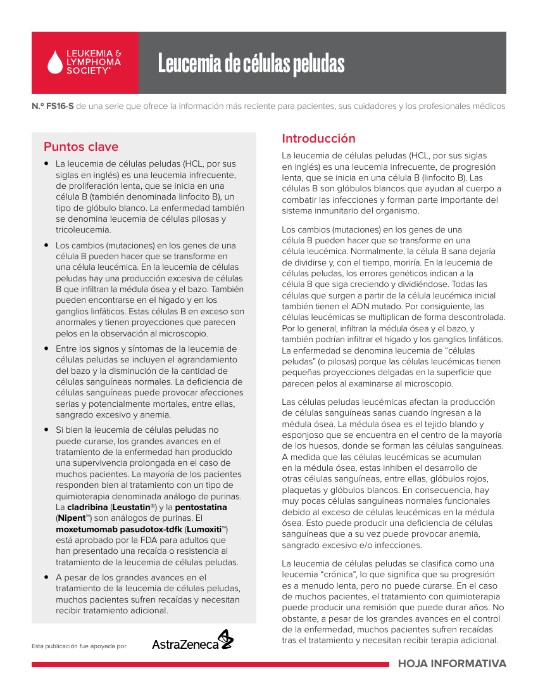
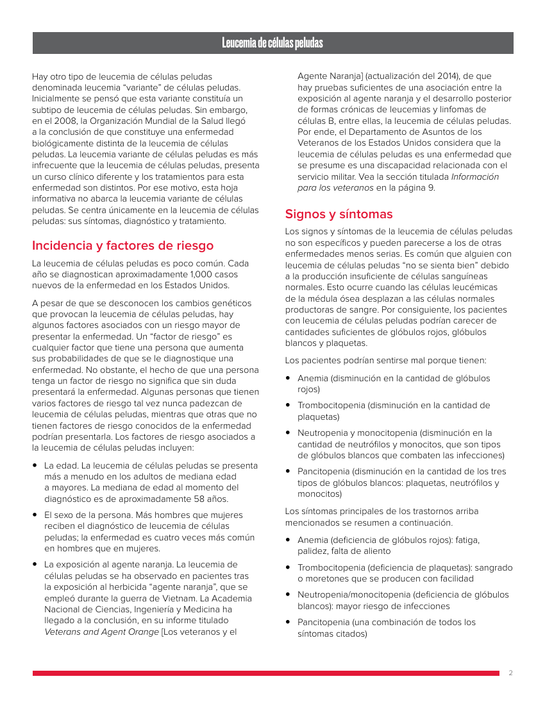
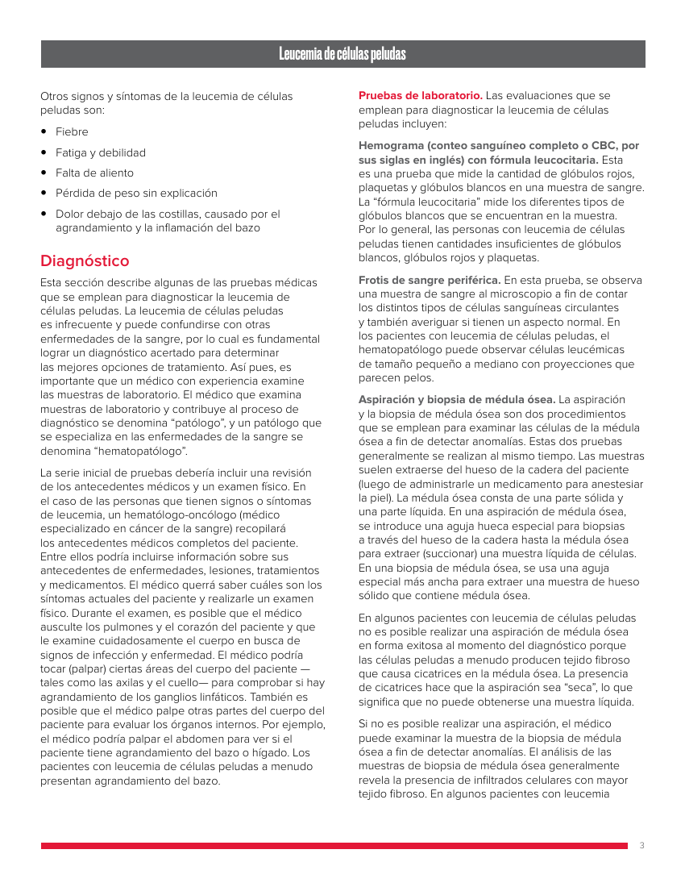
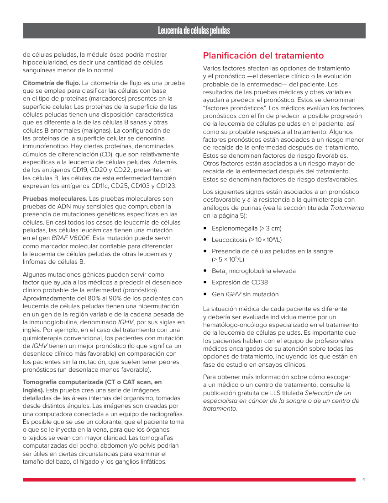
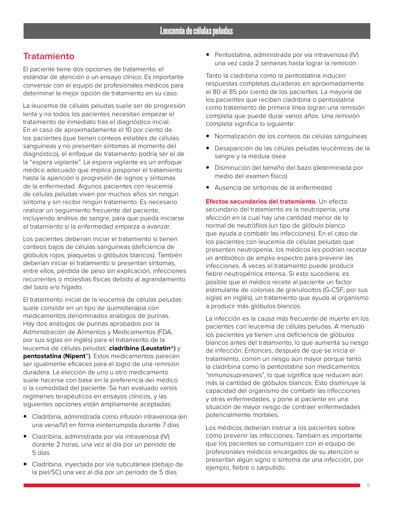
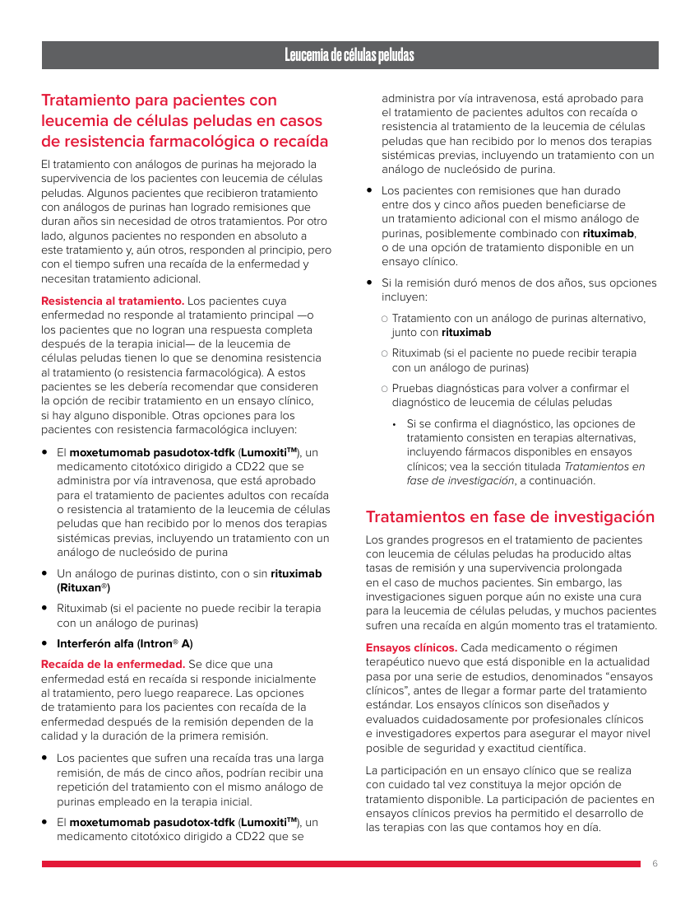
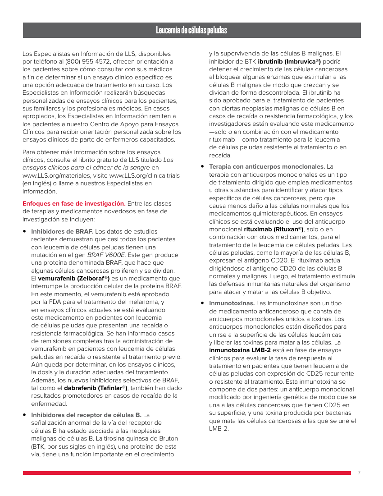
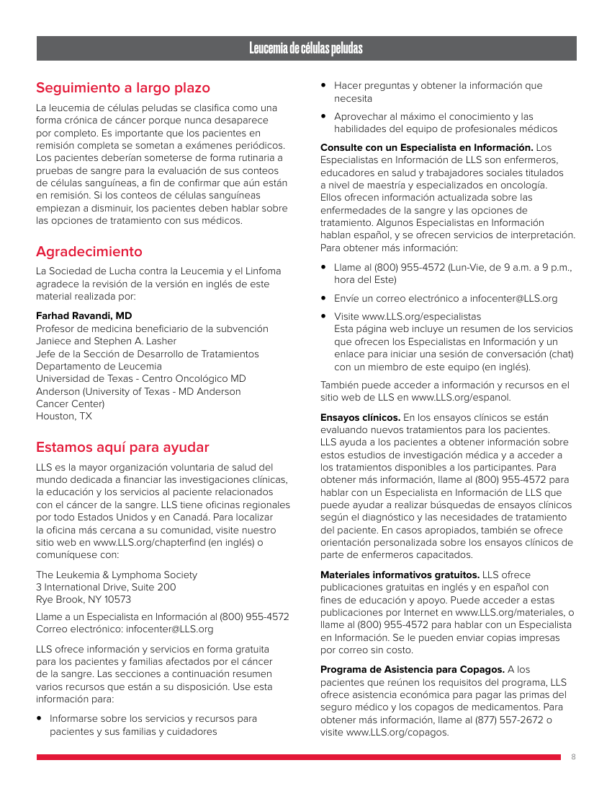
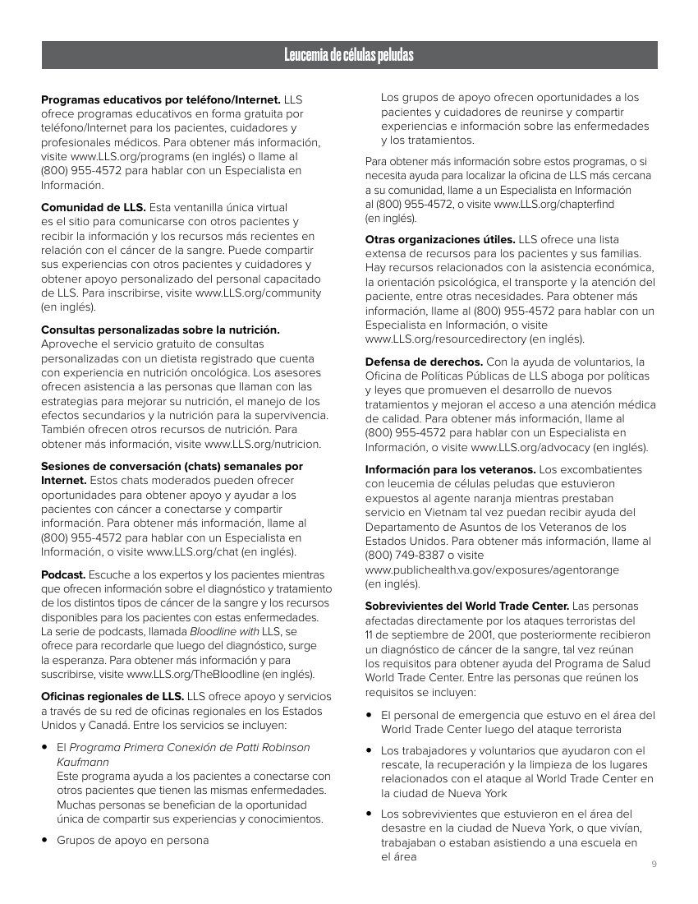
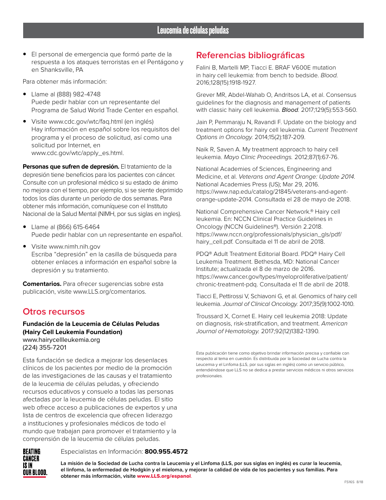

Página 1 de 10Índice documental: 0
Leucemia de células peludas
N.º FS16-S de una serie que ofrece la información más reciente para pacientes, sus cuidadores y los profesionales médicos
Puntos clave
• La leucemia de células peludas (HCL, por sus siglas en inglés) es una leucemia infrecuente, de proliferación lenta, que se inicia en una célula B (también denominada linfocito B), un tipo de glóbulo blanco. La enfermedad también se denomina leucemia de células pilosas y tricoleucemia.
• Los cambios (mutaciones) en los genes de una célula B pueden hacer que se transforme en una célula leucémica. En la leucemia de células peludas hay una producción excesiva de células B que infiltran la médula ósea y el bazo. También pueden encontrarse en el hígado y en los ganglios linfáticos. Estas células B en exceso son anormales y tienen proyecciones que parecen pelos en la observación al microscopio.
• Entre los signos y síntomas de la leucemia de células peludas se incluyen el agrandamiento del bazo y la disminución de la cantidad de células sanguíneas normales. La deficiencia de células sanguíneas puede provocar afecciones serias y potencialmente mortales, entre ellas, sangrado excesivo y anemia.
• Si bien la leucemia de células peludas no puede curarse, los grandes avances en el tratamiento de la enfermedad han producido una supervivencia prolongada en el caso de muchos pacientes. La mayoría de los pacientes responden bien al tratamiento con un tipo de quimioterapia denominada análogo de purinas. La cladribina (Leustatin®) y la pentostatina (Nipent™) son análogos de purinas. El moxetumomab pasudotox-tdfk (Lumoxiti™) está aprobado por la FDA para adultos que han presentado una recaída o resistencia al tratamiento de la leucemia de células peludas.
• A pesar de los grandes avances en el tratamiento de la leucemia de células peludas, muchos pacientes sufren recaídas y necesitan recibir tratamiento adicional.
Introducción
La leucemia de células peludas (HCL, por sus siglas en inglés) es una leucemia infrecuente, de progresión lenta, que se inicia en una célula B (linfocito B). Las células B son glóbulos blancos que ayudan al cuerpo a combatir las infecciones y forman parte importante del sistema inmunitario del organismo.
Los cambios (mutaciones) en los genes de una célula B pueden hacer que se transforme en una célula leucémica. Normalmente, la célula B sana dejaría de dividirse y, con el tiempo, moriría. En la leucemia de células peludas, los errores genéticos indican a la célula B que siga creciendo y dividiéndose. Todas las células que surgen a partir de la célula leucémica inicial también tienen el ADN mutado. Por consiguiente, las células leucémicas se multiplican de forma descontrolada. Por lo general, infiltran la médula ósea y el bazo, y también podrían infiltrar el hígado y los ganglios linfáticos. La enfermedad se denomina leucemia de “células peludas” (o pilosas) porque las células leucémicas tienen pequeñas proyecciones delgadas en la superficie que parecen pelos al examinarse al microscopio.
Las células peludas leucémicas afectan la producción de células sanguíneas sanas cuando ingresan a la médula ósea. La médula ósea es el tejido blando y esponjoso que se encuentra en el centro de la mayoría de los huesos, donde se forman las células sanguíneas. A medida que las células leucémicas se acumulan en la médula ósea, estas inhiben el desarrollo de otras células sanguíneas, entre ellas, glóbulos rojos, plaquetas y glóbulos blancos. En consecuencia, hay muy pocas células sanguíneas normales funcionales debido al exceso de células leucémicas en la médula ósea. Esto puede producir una deficiencia de células sanguíneas que a su vez puede provocar anemia, sangrado excesivo e/o infecciones.
La leucemia de células peludas se clasifica como una leucemia “crónica”, lo que significa que su progresión es a menudo lenta, pero no puede curarse. En el caso de muchos pacientes, el tratamiento con quimioterapia puede producir una remisión que puede durar años. No obstante, a pesar de los grandes avances en el control de la enfermedad, muchos pacientes sufren recaídas tras el tratamiento y necesitan recibir terapia adicional.
Esta publicación fue apoyada por:
HOJA INFORMATIVA
Contrastar con la página original 1

Página 2 de 10Índice documental: 1
Leucemia de células peludas
Hay otro tipo de leucemia de células peludas denominada leucemia “variante” de células peludas. Inicialmente se pensó que esta variante constituía un subtipo de leucemia de células peludas. Sin embargo, en el 2008, la Organización Mundial de la Salud llegó a la conclusión de que constituye una enfermedad biológicamente distinta de la leucemia de células peludas. La leucemia variante de células peludas es más infrecuente que la leucemia de células peludas, presenta un curso clínico diferente y los tratamientos para esta enfermedad son distintos. Por ese motivo, esta hoja informativa no abarca la leucemia variante de células peludas. Se centra únicamente en la leucemia de células peludas: sus síntomas, diagnóstico y tratamiento.
Incidencia y factores de riesgo
La leucemia de células peludas es poco común. Cada año se diagnostican aproximadamente 1,000 casos nuevos de la enfermedad en los Estados Unidos.
A pesar de que se desconocen los cambios genéticos que provocan la leucemia de células peludas, hay algunos factores asociados con un riesgo mayor de presentar la enfermedad. Un “factor de riesgo” es cualquier factor que tiene una persona que aumenta sus probabilidades de que se le diagnostique una enfermedad. No obstante, el hecho de que una persona tenga un factor de riesgo no significa que sin duda presentará la enfermedad. Algunas personas que tienen varios factores de riesgo tal vez nunca padezcan de leucemia de células peludas, mientras que otras que no tienen factores de riesgo conocidos de la enfermedad podrían presentarla. Los factores de riesgo asociados a la leucemia de células peludas incluyen:
• La edad. La leucemia de células peludas se presenta más a menudo en los adultos de mediana edad a mayores. La mediana de edad al momento del diagnóstico es de aproximadamente 58 años.
• El sexo de la persona. Más hombres que mujeres reciben el diagnóstico de leucemia de células peludas; la enfermedad es cuatro veces más común en hombres que en mujeres.
• La exposición al agente naranja. La leucemia de células peludas se ha observado en pacientes tras la exposición al herbicida “agente naranja”, que se empleó durante la guerra de Vietnam. La Academia Nacional de Ciencias, Ingeniería y Medicina ha llegado a la conclusión, en su informe titulado Veterans and Agent Orange [Los veteranos y el
Agente Naranja] (actualización del 2014), de que hay pruebas suficientes de una asociación entre la exposición al agente naranja y el desarrollo posterior de formas crónicas de leucemias y linfomas de células B, entre ellas, la leucemia de células peludas. Por ende, el Departamento de Asuntos de los Veteranos de los Estados Unidos considera que la leucemia de células peludas es una enfermedad que se presume es una discapacidad relacionada con el servicio militar. Vea la sección titulada Información para los veteranos en la página 9.
Signos y síntomas
Los signos y síntomas de la leucemia de células peludas no son específicos y pueden parecerse a los de otras enfermedades menos serias. Es común que alguien con leucemia de células peludas “no se sienta bien” debido a la producción insuficiente de células sanguíneas normales. Esto ocurre cuando las células leucémicas de la médula ósea desplazan a las células normales productoras de sangre. Por consiguiente, los pacientes con leucemia de células peludas podrían carecer de cantidades suficientes de glóbulos rojos, glóbulos blancos y plaquetas.
Los pacientes podrían sentirse mal porque tienen:
• Anemia (disminución en la cantidad de glóbulos rojos)
• Trombocitopenia (disminución en la cantidad de plaquetas)
• Neutropenia y monocitopenia (disminución en la cantidad de neutrófilos y monocitos, que son tipos de glóbulos blancos que combaten las infecciones)
• Pancitopenia (disminución en la cantidad de los tres tipos de glóbulos blancos: plaquetas, neutrófilos y monocitos)
Los síntomas principales de los trastornos arriba mencionados se resumen a continuación.
• Anemia (deficiencia de glóbulos rojos): fatiga, palidez, falta de aliento
• Trombocitopenia (deficiencia de plaquetas): sangrado o moretones que se producen con facilidad
• Neutropenia/monocitopenia (deficiencia de glóbulos blancos): mayor riesgo de infecciones
• Pancitopenia (una combinación de todos los síntomas citados)
2
Contrastar con la página original 2

Página 3 de 10Índice documental: 2
Leucemia de células peludas
Otros signos y síntomas de la leucemia de células peludas son:
• Fiebre
• Fatiga y debilidad
• Falta de aliento
• Pérdida de peso sin explicación
• Dolor debajo de las costillas, causado por el agrandamiento y la inflamación del bazo
Diagnóstico
Esta sección describe algunas de las pruebas médicas que se emplean para diagnosticar la leucemia de células peludas. La leucemia de células peludas es infrecuente y puede confundirse con otras enfermedades de la sangre, por lo cual es fundamental lograr un diagnóstico acertado para determinar las mejores opciones de tratamiento. Así pues, es importante que un médico con experiencia examine las muestras de laboratorio. El médico que examina muestras de laboratorio y contribuye al proceso de diagnóstico se denomina “patólogo”, y un patólogo que se especializa en las enfermedades de la sangre se denomina “hematopatólogo”.
La serie inicial de pruebas debería incluir una revisión de los antecedentes médicos y un examen físico. En el caso de las personas que tienen signos o síntomas de leucemia, un hematólogo-oncólogo (médico especializado en cáncer de la sangre) recopilará los antecedentes médicos completos del paciente. Entre ellos podría incluirse información sobre sus antecedentes de enfermedades, lesiones, tratamientos y medicamentos. El médico querrá saber cuáles son los síntomas actuales del paciente y realizarle un examen físico. Durante el examen, es posible que el médico ausculte los pulmones y el corazón del paciente y que le examine cuidadosamente el cuerpo en busca de signos de infección y enfermedad. El médico podría tocar (palpar) ciertas áreas del cuerpo del paciente — tales como las axilas y el cuello— para comprobar si hay agrandamiento de los ganglios linfáticos. También es posible que el médico palpe otras partes del cuerpo del paciente para evaluar los órganos internos. Por ejemplo, el médico podría palpar el abdomen para ver si el paciente tiene agrandamiento del bazo o hígado. Los pacientes con leucemia de células peludas a menudo presentan agrandamiento del bazo.
Pruebas de laboratorio. Las evaluaciones que se emplean para diagnosticar la leucemia de células peludas incluyen:
Hemograma (conteo sanguíneo completo o CBC, por sus siglas en inglés) con fórmula leucocitaria. Esta es una prueba que mide la cantidad de glóbulos rojos, plaquetas y glóbulos blancos en una muestra de sangre. La “fórmula leucocitaria” mide los diferentes tipos de glóbulos blancos que se encuentran en la muestra. Por lo general, las personas con leucemia de células peludas tienen cantidades insuficientes de glóbulos blancos, glóbulos rojos y plaquetas.
Frotis de sangre periférica. En esta prueba, se observa una muestra de sangre al microscopio a fin de contar los distintos tipos de células sanguíneas circulantes y también averiguar si tienen un aspecto normal. En los pacientes con leucemia de células peludas, el hematopatólogo puede observar células leucémicas de tamaño pequeño a mediano con proyecciones que parecen pelos.
Aspiración y biopsia de médula ósea. La aspiración y la biopsia de médula ósea son dos procedimientos que se emplean para examinar las células de la médula ósea a fin de detectar anomalías. Estas dos pruebas generalmente se realizan al mismo tiempo. Las muestras suelen extraerse del hueso de la cadera del paciente (luego de administrarle un medicamento para anestesiar la piel). La médula ósea consta de una parte sólida y una parte líquida. En una aspiración de médula ósea, se introduce una aguja hueca especial para biopsias a través del hueso de la cadera hasta la médula ósea para extraer (succionar) una muestra líquida de células. En una biopsia de médula ósea, se usa una aguja especial más ancha para extraer una muestra de hueso sólido que contiene médula ósea.
En algunos pacientes con leucemia de células peludas no es posible realizar una aspiración de médula ósea en forma exitosa al momento del diagnóstico porque las células peludas a menudo producen tejido fibroso que causa cicatrices en la médula ósea. La presencia de cicatrices hace que la aspiración sea “seca”, lo que significa que no puede obtenerse una muestra líquida.
Si no es posible realizar una aspiración, el médico puede examinar la muestra de la biopsia de médula ósea a fin de detectar anomalías. El análisis de las muestras de biopsia de médula ósea generalmente revela la presencia de infiltrados celulares con mayor tejido fibroso. En algunos pacientes con leucemia
3
Contrastar con la página original 3

Página 4 de 10Índice documental: 3
Leucemia de células peludas
de células peludas, la médula ósea podría mostrar hipocelularidad, es decir una cantidad de células sanguíneas menor de lo normal.
Citometría de flujo. La citometría de flujo es una prueba que se emplea para clasificar las células con base en el tipo de proteínas (marcadores) presentes en la superficie celular. Las proteínas de la superficie de las células peludas tienen una disposición característica que es diferente a la de las células B sanas y otras células B anormales (malignas). La configuración de las proteínas de la superficie celular se denomina inmunofenotipo. Hay ciertas proteínas, denominadas cúmulos de diferenciación (CD), que son relativamente específicas a la leucemia de células peludas. Además de los antígenos CD19, CD20 y CD22, presentes en las células B, las células de esta enfermedad también expresan los antígenos CD11c, CD25, CD103 y CD123.
Pruebas moleculares. Las pruebas moleculares son pruebas de ADN muy sensibles que comprueban la presencia de mutaciones genéticas específicas en las células. En casi todos los casos de leucemia de células peludas, las células leucémicas tienen una mutación en el gen BRAF V600E. Esta mutación puede servir como marcador molecular confiable para diferenciar la leucemia de células peludas de otras leucemias y linfomas de células B.
Algunas mutaciones génicas pueden servir como factor que ayuda a los médicos a predecir el desenlace clínico probable de la enfermedad (pronóstico). Aproximadamente del 80% al 90% de los pacientes con leucemia de células peludas tienen una hipermutación en un gen de la región variable de la cadena pesada de la inmunoglobulina, denominado IGHV, por sus siglas en inglés. Por ejemplo, en el caso del tratamiento con una quimioterapia convencional, los pacientes con mutación de IGHV tienen un mejor pronóstico (lo que significa un desenlace clínico más favorable) en comparación con los pacientes sin la mutación, que suelen tener peores pronósticos (un desenlace menos favorable).
Tomografía computarizada (CT o CAT scan, en inglés). Esta prueba crea una serie de imágenes detalladas de las áreas internas del organismo, tomadas desde distintos ángulos. Las imágenes son creadas por una computadora conectada a un equipo de radiografías. Es posible que se use un colorante, que el paciente toma o que se le inyecta en la vena, para que los órganos o tejidos se vean con mayor claridad. Las tomografías computarizadas del pecho, abdomen y/o pelvis podrían ser útiles en ciertas circunstancias para examinar el tamaño del bazo, el hígado y los ganglios linfáticos.
Planificación del tratamiento
Varios factores afectan las opciones de tratamiento y el pronóstico —el desenlace clínico o la evolución probable de la enfermedad— del paciente. Los resultados de las pruebas médicas y otras variables ayudan a predecir el pronóstico. Estos se denominan “factores pronósticos”. Los médicos evalúan los factores pronósticos con el fin de predecir la posible progresión de la leucemia de células peludas en el paciente, así como su probable respuesta al tratamiento. Algunos factores pronósticos están asociados a un riesgo menor de recaída de la enfermedad después del tratamiento. Estos se denominan factores de riesgo favorables. Otros factores están asociados a un riesgo mayor de recaída de la enfermedad después del tratamiento. Estos se denominan factores de riesgo desfavorables.
Los siguientes signos están asociados a un pronóstico desfavorable y a la resistencia a la quimioterapia con análogos de purinas (vea la sección titulada Tratamiento en la página 5):
• Esplenomegalia (> 3 cm)
• Leucocitosis (> 10 × 109/L)
• Presencia de células peludas en la sangre (> 5 × 109/L)
• Beta microglobulina elevada 2
• Expresión de CD38
• Gen IGHV sin mutación
La situación médica de cada paciente es diferente y debería ser evaluada individualmente por un hematólogo-oncólogo especializado en el tratamiento de la leucemia de células peludas. Es importante que los pacientes hablen con el equipo de profesionales médicos encargados de su atención sobre todas las opciones de tratamiento, incluyendo los que están en fase de estudio en ensayos clínicos.
Para obtener más información sobre cómo escoger a un médico o un centro de tratamiento, consulte la publicación gratuita de LLS titulada Selección de un especialista en cáncer de la sangre o de un centro de tratamiento.
4
Contrastar con la página original 4

Página 5 de 10Índice documental: 4
Leucemia de células peludas
Tratamiento
El paciente tiene dos opciones de tratamiento: el estándar de atención o un ensayo clínico. Es importante conversar con el equipo de profesionales médicos para determinar la mejor opción de tratamiento en su caso.
La leucemia de células peludas suele ser de progresión lenta y no todos los pacientes necesitan empezar el tratamiento de inmediato tras el diagnóstico inicial. En el caso de aproximadamente el 10 por ciento de los pacientes (que tienen conteos estables de células sanguíneas y no presentan síntomas al momento del diagnóstico), el enfoque de tratamiento podría ser el de la “espera vigilante”. La espera vigilante es un enfoque médico adecuado que implica posponer el tratamiento hasta la aparición o progresión de signos y síntomas de la enfermedad. Algunos pacientes con leucemia de células peludas viven por muchos años sin ningún síntoma y sin recibir ningún tratamiento. Es necesario realizar un seguimiento frecuente del paciente, incluyendo análisis de sangre, para que pueda iniciarse el tratamiento si la enfermedad empieza a avanzar.
Los pacientes deberían iniciar el tratamiento si tienen conteos bajos de células sanguíneas (deficiencia de glóbulos rojos, plaquetas o glóbulos blancos). También deberían iniciar el tratamiento si presentan síntomas, entre ellos, pérdida de peso sin explicación, infecciones recurrentes o molestias físicas debido al agrandamiento del bazo e/o hígado.
El tratamiento inicial de la leucemia de células peludas suele consistir en un tipo de quimioterapia con medicamentos denominados análogos de purinas. Hay dos análogos de purinas aprobados por la Administración de Alimentos y Medicamentos (FDA, por sus siglas en inglés) para el tratamiento de la leucemia de células peludas: cladribina (Leustatin®) y pentostatina (Nipent™). Estos medicamentos parecen ser igualmente eficaces para el logro de una remisión duradera. La elección de uno u otro medicamento suele hacerse con base en la preferencia del médico o la comodidad del paciente. Se han evaluado varios regímenes terapéuticos en ensayos clínicos, y las siguientes opciones están ampliamente aceptadas:
• Cladribina, administrada como infusión intravenosa (en una vena/IV) en forma ininterrumpida durante 7 días
• Cladribina, administrada por vía intravenosa (IV) durante 2 horas, una vez al día por un período de 5 días
• Cladribina, inyectada por vía subcutánea (debajo de la piel/SC) una vez al día por un período de 5 días
• Pentostatina, administrada por vía intravenosa (IV) una vez cada 2 semanas hasta lograr la remisión
Tanto la cladribina como la pentostatina inducen respuestas completas duraderas en aproximadamente el 80 al 85 por ciento de los pacientes. La mayoría de los pacientes que reciben cladribina o pentostatina como tratamiento de primera línea logran una remisión completa que puede durar varios años. Una remisión completa significa lo siguiente:
• Normalización de los conteos de células sanguíneas
• Desaparición de las células peludas leucémicas de la sangre y la médula ósea
• Disminución del tamaño del bazo (determinada por medio del examen físico)
• Ausencia de síntomas de la enfermedad
Efectos secundarios del tratamiento. Un efecto secundario del tratamiento es la neutropenia, una afección en la cual hay una cantidad menor de lo normal de neutrófilos (un tipo de glóbulo blanco que ayuda a combatir las infecciones). En el caso de los pacientes con leucemia de células peludas que presenten neutropenia, los médicos les podrían recetar un antibiótico de amplio espectro para prevenir las infecciones. A veces el tratamiento puede producir fiebre neutropénica intensa. Si esto sucediera, es posible que el médico recete al paciente un factor estimulante de colonias de granulocitos (G-CSF, por sus siglas en inglés), un tratamiento que ayuda al organismo a producir más glóbulos blancos.
La infección es la causa más frecuente de muerte en los pacientes con leucemia de células peludas. A menudo los pacientes ya tienen una deficiencia de glóbulos blancos antes del tratamiento, lo que aumenta su riesgo de infección. Entonces, después de que se inicia el tratamiento, corren un riesgo aún mayor porque tanto la cladribina como la pentostatina son medicamentos “inmunosupresores”, lo que significa que reducen aún más la cantidad de glóbulos blancos. Esto disminuye la capacidad del organismo de combatir las infecciones y otras enfermedades, y pone al paciente en una situación de mayor riesgo de contraer enfermedades potencialmente mortales.
Los médicos deberían instruir a los pacientes sobre cómo prevenir las infecciones. También es importante que los pacientes se comuniquen con el equipo de profesionales médicos encargados de su atención si presentan algún signo o síntoma de una infección, por ejemplo, fiebre o sarpullido.
5
Contrastar con la página original 5

Página 6 de 10Índice documental: 5
Leucemia de células peludas
Tratamiento para pacientes con leucemia de células peludas en casos de resistencia farmacológica o recaída
El tratamiento con análogos de purinas ha mejorado la supervivencia de los pacientes con leucemia de células peludas. Algunos pacientes que recibieron tratamiento con análogos de purinas han logrado remisiones que duran años sin necesidad de otros tratamientos. Por otro lado, algunos pacientes no responden en absoluto a este tratamiento y, aún otros, responden al principio, pero con el tiempo sufren una recaída de la enfermedad y necesitan tratamiento adicional.
Resistencia al tratamiento. Los pacientes cuya enfermedad no responde al tratamiento principal —o los pacientes que no logran una respuesta completa después de la terapia inicial— de la leucemia de células peludas tienen lo que se denomina resistencia al tratamiento (o resistencia farmacológica). A estos pacientes se les debería recomendar que consideren la opción de recibir tratamiento en un ensayo clínico, si hay alguno disponible. Otras opciones para los pacientes con resistencia farmacológica incluyen:
• El moxetumomab pasudotox-tdfk (LumoxitiTM), un medicamento citotóxico dirigido a CD22 que se administra por vía intravenosa, que está aprobado para el tratamiento de pacientes adultos con recaída o resistencia al tratamiento de la leucemia de células peludas que han recibido por lo menos dos terapias sistémicas previas, incluyendo un tratamiento con un análogo de nucleósido de purina
• Un análogo de purinas distinto, con o sin rituximab (Rituxan®)
• Rituximab (si el paciente no puede recibir la terapia con un análogo de purinas)
• Interferón alfa (Intron® A)
Recaída de la enfermedad. Se dice que una enfermedad está en recaída si responde inicialmente al tratamiento, pero luego reaparece. Las opciones de tratamiento para los pacientes con recaída de la enfermedad después de la remisión dependen de la calidad y la duración de la primera remisión.
• Los pacientes que sufren una recaída tras una larga remisión, de más de cinco años, podrían recibir una repetición del tratamiento con el mismo análogo de purinas empleado en la terapia inicial.
• El moxetumomab pasudotox-tdfk (LumoxitiTM), un medicamento citotóxico dirigido a CD22 que se
administra por vía intravenosa, está aprobado para el tratamiento de pacientes adultos con recaída o resistencia al tratamiento de la leucemia de células peludas que han recibido por lo menos dos terapias sistémicas previas, incluyendo un tratamiento con un análogo de nucleósido de purina.
• Los pacientes con remisiones que han durado entre dos y cinco años pueden beneficiarse de un tratamiento adicional con el mismo análogo de purinas, posiblemente combinado con rituximab, o de una opción de tratamiento disponible en un ensayo clínico.
• Si la remisión duró menos de dos años, sus opciones incluyen:
○○Tratamiento con un análogo de purinas alternativo, junto con rituximab
○○Rituximab (si el paciente no puede recibir terapia con un análogo de purinas)
○○Pruebas diagnósticas para volver a confirmar el diagnóstico de leucemia de células peludas
• S i se confirma el diagnóstico, las opciones de tratamiento consisten en terapias alternativas, incluyendo fármacos disponibles en ensayos clínicos; vea la sección titulada Tratamientos en fase de investigación, a continuación.
Tratamientos en fase de investigación
Los grandes progresos en el tratamiento de pacientes con leucemia de células peludas ha producido altas tasas de remisión y una supervivencia prolongada en el caso de muchos pacientes. Sin embargo, las investigaciones siguen porque aún no existe una cura para la leucemia de células peludas, y muchos pacientes sufren una recaída en algún momento tras el tratamiento.
Ensayos clínicos. Cada medicamento o régimen terapéutico nuevo que está disponible en la actualidad pasa por una serie de estudios, denominados “ensayos clínicos”, antes de llegar a formar parte del tratamiento estándar. Los ensayos clínicos son diseñados y evaluados cuidadosamente por profesionales clínicos e investigadores expertos para asegurar el mayor nivel posible de seguridad y exactitud científica.
La participación en un ensayo clínico que se realiza con cuidado tal vez constituya la mejor opción de tratamiento disponible. La participación de pacientes en ensayos clínicos previos ha permitido el desarrollo de las terapias con las que contamos hoy en día.
6
Contrastar con la página original 6

Página 7 de 10Índice documental: 6
Leucemia de células peludas
Los Especialistas en Información de LLS, disponibles por teléfono al (800) 955-4572, ofrecen orientación a los pacientes sobre cómo consultar con sus médicos a fin de determinar si un ensayo clínico específico es una opción adecuada de tratamiento en su caso. Los Especialistas en Información realizarán búsquedas personalizadas de ensayos clínicos para los pacientes, sus familiares y los profesionales médicos. En casos apropiados, los Especialistas en Información remiten a los pacientes a nuestro Centro de Apoyo para Ensayos Clínicos para recibir orientación personalizada sobre los ensayos clínicos de parte de enfermeros capacitados.
Para obtener más información sobre los ensayos clínicos, consulte el librito gratuito de LLS titulado Los ensayos clínicos para el cáncer de la sangre en www.LLS.org/materiales, visite www.LLS.org/clinicaltrials (en inglés) o llame a nuestros Especialistas en Información.
Enfoques en fase de investigación. Entre las clases de terapias y medicamentos novedosos en fase de investigación se incluyen:
• Inhibidores de BRAF. Los datos de estudios recientes demuestran que casi todos los pacientes con leucemia de células peludas tienen una mutación en el gen BRAF V600E. Este gen produce una proteína denominada BRAF, que hace que algunas células cancerosas proliferen y se dividan. El vemurafenib (Zelboraf®) es un medicamento que interrumpe la producción celular de la proteína BRAF. En este momento, el vemurafenib está aprobado por la FDA para el tratamiento del melanoma, y en ensayos clínicos actuales se está evaluando este medicamento en pacientes con leucemia de células peludas que presentan una recaída o resistencia farmacológica. Se han informado casos de remisiones completas tras la administración de vemurafenib en pacientes con leucemia de células peludas en recaída o resistente al tratamiento previo. Aún queda por determinar, en los ensayos clínicos, la dosis y la duración adecuadas del tratamiento. Además, los nuevos inhibidores selectivos de BRAF, tal como el dabrafenib (Tafinlar®), también han dado resultados prometedores en casos de recaída de la enfermedad.
• Inhibidores del receptor de células B. La señalización anormal de la vía del receptor de células B ha estado asociada a las neoplasias malignas de células B. La tirosina quinasa de Bruton (BTK, por sus siglas en inglés), una proteína de esta vía, tiene una función importante en el crecimiento
y la supervivencia de las células B malignas. El inhibidor de BTK ibrutinib (Imbruvica®) podría detener el crecimiento de las células cancerosas al bloquear algunas enzimas que estimulan a las células B malignas de modo que crezcan y se dividan de forma descontrolada. El ibrutinib ha sido aprobado para el tratamiento de pacientes con ciertas neoplasias malignas de células B en casos de recaída o resistencia farmacológica, y los investigadores están evaluando este medicamento —solo o en combinación con el medicamento rituximab— como tratamiento para la leucemia de células peludas resistente al tratamiento o en recaída.
• Terapia con anticuerpos monoclonales. La terapia con anticuerpos monoclonales es un tipo de tratamiento dirigido que emplea medicamentos u otras sustancias para identificar y atacar tipos específicos de células cancerosas, pero que causa menos daño a las células normales que los medicamentos quimioterapéuticos. En ensayos clínicos se está evaluando el uso del anticuerpo monoclonal rituximab (Rituxan®), solo o en combinación con otros medicamentos, para el tratamiento de la leucemia de células peludas. Las células peludas, como la mayoría de las células B, expresan el antígeno CD20. El rituximab actúa dirigiéndose al antígeno CD20 de las células B normales y malignas. Luego, el tratamiento estimula las defensas inmunitarias naturales del organismo para atacar y matar a las células B objetivo.
• Inmunotoxinas. Las inmunotoxinas son un tipo de medicamento anticanceroso que consta de anticuerpos monoclonales unidos a toxinas. Los anticuerpos monoclonales están diseñados para unirse a la superficie de las células leucémicas y liberar las toxinas para matar a las células. La inmunotoxina LMB-2 está en fase de ensayos clínicos para evaluar la tasa de respuesta al tratamiento en pacientes que tienen leucemia de células peludas con expresión de CD25 recurrente o resistente al tratamiento. Esta inmunotoxina se compone de dos partes: un anticuerpo monoclonal modificado por ingeniería genética de modo que se una a las células cancerosas que tienen CD25 en su superficie, y una toxina producida por bacterias que mata las células cancerosas a las que se une el LMB-2.
7
Contrastar con la página original 7

Página 8 de 10Índice documental: 7
Leucemia de células peludas
Seguimiento a largo plazo
La leucemia de células peludas se clasifica como una forma crónica de cáncer porque nunca desaparece por completo. Es importante que los pacientes en remisión completa se sometan a exámenes periódicos. Los pacientes deberían someterse de forma rutinaria a pruebas de sangre para la evaluación de sus conteos de células sanguíneas, a fin de confirmar que aún están en remisión. Si los conteos de células sanguíneas empiezan a disminuir, los pacientes deben hablar sobre las opciones de tratamiento con sus médicos.
Agradecimiento
La Sociedad de Lucha contra la Leucemia y el Linfoma agradece la revisión de la versión en inglés de este material realizada por:
Farhad Ravandi, MD Profesor de medicina beneficiario de la subvención Janiece and Stephen A. Lasher Jefe de la Sección de Desarrollo de Tratamientos Departamento de Leucemia Universidad de Texas - Centro Oncológico MD Anderson (University of Texas - MD Anderson Cancer Center) Houston, TX
Estamos aquí para ayudar
LLS es la mayor organización voluntaria de salud del mundo dedicada a financiar las investigaciones clínicas, la educación y los servicios al paciente relacionados con el cáncer de la sangre. LLS tiene oficinas regionales por todo Estados Unidos y en Canadá. Para localizar la oficina más cercana a su comunidad, visite nuestro sitio web en www.LLS.org/chapterfind (en inglés) o comuníquese con:
The Leukemia & Lymphoma Society 3 International Drive, Suite 200 Rye Brook, NY 10573
Llame a un Especialista en Información al (800) 955-4572 Correo electrónico: infocenter@LLS.org
LLS ofrece información y servicios en forma gratuita para los pacientes y familias afectados por el cáncer de la sangre. Las secciones a continuación resumen varios recursos que están a su disposición. Use esta información para:
• Informarse sobre los servicios y recursos para pacientes y sus familias y cuidadores
• Hacer preguntas y obtener la información que necesita
• Aprovechar al máximo el conocimiento y las habilidades del equipo de profesionales médicos
Consulte con un Especialista en Información. Los Especialistas en Información de LLS son enfermeros, educadores en salud y trabajadores sociales titulados a nivel de maestría y especializados en oncología. Ellos ofrecen información actualizada sobre las enfermedades de la sangre y las opciones de tratamiento. Algunos Especialistas en Información hablan español, y se ofrecen servicios de interpretación. Para obtener más información:
• Llame al (800) 955-4572 (Lun-Vie, de 9 a.m. a 9 p.m., hora del Este)
• Envíe un correo electrónico a infocenter@LLS.org
• Visite www.LLS.org/especialistas Esta página web incluye un resumen de los servicios que ofrecen los Especialistas en Información y un enlace para iniciar una sesión de conversación (chat) con un miembro de este equipo (en inglés).
También puede acceder a información y recursos en el sitio web de LLS en www.LLS.org/espanol.
Ensayos clínicos. En los ensayos clínicos se están evaluando nuevos tratamientos para los pacientes. LLS ayuda a los pacientes a obtener información sobre estos estudios de investigación médica y a acceder a los tratamientos disponibles a los participantes. Para obtener más información, llame al (800) 955-4572 para hablar con un Especialista en Información de LLS que puede ayudar a realizar búsquedas de ensayos clínicos según el diagnóstico y las necesidades de tratamiento del paciente. En casos apropiados, también se ofrece orientación personalizada sobre los ensayos clínicos de parte de enfermeros capacitados.
Materiales informativos gratuitos. LLS ofrece publicaciones gratuitas en inglés y en español con fines de educación y apoyo. Puede acceder a estas publicaciones por Internet en www.LLS.org/materiales, o llame al (800) 955-4572 para hablar con un Especialista en Información. Se le pueden enviar copias impresas por correo sin costo.
Programa de Asistencia para Copagos. A los pacientes que reúnen los requisitos del programa, LLS ofrece asistencia económica para pagar las primas del seguro médico y los copagos de medicamentos. Para obtener más información, llame al (877) 557-2672 o visite www.LLS.org/copagos.
8
Contrastar con la página original 8

Página 9 de 10Índice documental: 8
Leucemia de células peludas
Programas educativos por teléfono/Internet. LLS ofrece programas educativos en forma gratuita por teléfono/Internet para los pacientes, cuidadores y profesionales médicos. Para obtener más información, visite www.LLS.org/programs (en inglés) o llame al (800) 955-4572 para hablar con un Especialista en Información.
Comunidad de LLS. Esta ventanilla única virtual es el sitio para comunicarse con otros pacientes y recibir la información y los recursos más recientes en relación con el cáncer de la sangre. Puede compartir sus experiencias con otros pacientes y cuidadores y obtener apoyo personalizado del personal capacitado de LLS. Para inscribirse, visite www.LLS.org/community (en inglés).
Consultas personalizadas sobre la nutrición. Aproveche el servicio gratuito de consultas personalizadas con un dietista registrado que cuenta con experiencia en nutrición oncológica. Los asesores ofrecen asistencia a las personas que llaman con las estrategias para mejorar su nutrición, el manejo de los efectos secundarios y la nutrición para la supervivencia. También ofrecen otros recursos de nutrición. Para obtener más información, visite www.LLS.org/nutricion.
Sesiones de conversación (chats) semanales por Internet. Estos chats moderados pueden ofrecer oportunidades para obtener apoyo y ayudar a los pacientes con cáncer a conectarse y compartir información. Para obtener más información, llame al (800) 955-4572 para hablar con un Especialista en Información, o visite www.LLS.org/chat (en inglés).
Podcast. Escuche a los expertos y los pacientes mientras que ofrecen información sobre el diagnóstico y tratamiento de los distintos tipos de cáncer de la sangre y los recursos disponibles para los pacientes con estas enfermedades. La serie de podcasts, llamada Bloodline with LLS, se ofrece para recordarle que luego del diagnóstico, surge la esperanza. Para obtener más información y para suscribirse, visite www.LLS.org/TheBloodline (en inglés).
Oficinas regionales de LLS. LLS ofrece apoyo y servicios a través de su red de oficinas regionales en los Estados Unidos y Canadá. Entre los servicios se incluyen:
• El Programa Primera Conexión de Patti Robinson Kaufmann Este programa ayuda a los pacientes a conectarse con otros pacientes que tienen las mismas enfermedades. Muchas personas se benefician de la oportunidad única de compartir sus experiencias y conocimientos.
• Grupos de apoyo en persona
Los grupos de apoyo ofrecen oportunidades a los pacientes y cuidadores de reunirse y compartir experiencias e información sobre las enfermedades y los tratamientos.
Para obtener más información sobre estos programas, o si necesita ayuda para localizar la oficina de LLS más cercana a su comunidad, llame a un Especialista en Información al (800) 955-4572, o visite www.LLS.org/chapterfind (en inglés).
Otras organizaciones útiles. LLS ofrece una lista extensa de recursos para los pacientes y sus familias. Hay recursos relacionados con la asistencia económica, la orientación psicológica, el transporte y la atención del paciente, entre otras necesidades. Para obtener más información, llame al (800) 955-4572 para hablar con un Especialista en Información, o visite www.LLS.org/resourcedirectory (en inglés).
Defensa de derechos. Con la ayuda de voluntarios, la Oficina de Políticas Públicas de LLS aboga por políticas y leyes que promueven el desarrollo de nuevos tratamientos y mejoran el acceso a una atención médica de calidad. Para obtener más información, llame al (800) 955-4572 para hablar con un Especialista en Información, o visite www.LLS.org/advocacy (en inglés).
Información para los veteranos. Los excombatientes con leucemia de células peludas que estuvieron expuestos al agente naranja mientras prestaban servicio en Vietnam tal vez puedan recibir ayuda del Departamento de Asuntos de los Veteranos de los Estados Unidos. Para obtener más información, llame al (800) 749-8387 o visite www.publichealth.va.gov/exposures/agentorange (en inglés).
Sobrevivientes del World Trade Center. Las personas afectadas directamente por los ataques terroristas del 11 de septiembre de 2001, que posteriormente recibieron un diagnóstico de cáncer de la sangre, tal vez reúnan los requisitos para obtener ayuda del Programa de Salud World Trade Center. Entre las personas que reúnen los requisitos se incluyen:
• El personal de emergencia que estuvo en el área del World Trade Center luego del ataque terrorista
• Los trabajadores y voluntarios que ayudaron con el rescate, la recuperación y la limpieza de los lugares relacionados con el ataque al World Trade Center en la ciudad de Nueva York
• Los sobrevivientes que estuvieron en el área del desastre en la ciudad de Nueva York, o que vivían, trabajaban o estaban asistiendo a una escuela en el área
9
Contrastar con la página original 9

Página 10 de 10Índice documental: 9
Leucemia de células peludas
• El personal de emergencia que formó parte de la respuesta a los ataques terroristas en el Pentágono y en Shanksville, PA
Para obtener más información:
• Llame al (888) 982-4748 Puede pedir hablar con un representante del Programa de Salud World Trade Center en español.
• Visite www.cdc.gov/wtc/faq.html (en inglés) Hay información en español sobre los requisitos del programa y el proceso de solicitud, así como una solicitud por Internet, en www.cdc.gov/wtc/apply_es.html.
Personas que sufren de depresión. El tratamiento de la depresión tiene beneficios para los pacientes con cáncer. Consulte con un profesional médico si su estado de ánimo no mejora con el tiempo, por ejemplo, si se siente deprimido todos los días durante un período de dos semanas. Para obtener más información, comuníquese con el Instituto Nacional de la Salud Mental (NIMH, por sus siglas en ingles).
• Llame al (866) 615-6464 Puede pedir hablar con un representante en español.
• Visite www.nimh.nih.gov Escriba “depresión” en la casilla de búsqueda para obtener enlaces a información en español sobre la depresión y su tratamiento.
Comentarios. Para ofrecer sugerencias sobre esta publicación, visite www.LLS.org/comentarios.
Otros recursos
Fundación de la Leucemia de Células Peludas (Hairy Cell Leukemia Foundation) www.hairycellleukemia.org (224) 355-7201
Esta fundación se dedica a mejorar los desenlaces clínicos de los pacientes por medio de la promoción de las investigaciones de las causas y el tratamiento de la leucemia de células peludas, y ofreciendo recursos educativos y consuelo a todas las personas afectadas por la leucemia de células peludas. El sitio web ofrece acceso a publicaciones de expertos y una lista de centros de excelencia que ofrecen liderazgo a instituciones y profesionales médicos de todo el mundo que trabajan para promover el tratamiento y la comprensión de la leucemia de células peludas.
Referencias bibliográficas
Falini B, Martelli MP, Tiacci E. BRAF V600E mutation in hairy cell leukemia: from bench to bedside. Blood. 2016;128(15):1918-1927.
Grever MR, Abdel-Wahab O, Andritsos LA, et al. Consensus guidelines for the diagnosis and management of patients with classic hairy cell leukemia. Blood. 2017;129(5):553-560.
Jain P, Pemmaraju N, Ravandi F. Update on the biology and treatment options for hairy cell leukemia. Current Treatment Options in Oncology. 2014;15(2):187-209.
Naik R, Saven A. My treatment approach to hairy cell leukemia. Mayo Clinic Proceedings. 2012;87(1):67-76.
National Academies of Sciences, Engineering and Medicine, et al. Veterans and Agent Orange: Update 2014. National Academies Press (US); Mar 29, 2016. https://www.nap.edu/catalog/21845/veterans-and-agent- orange-update-2014. Consultada el 28 de mayo de 2018.
National Comprehensive Cancer Network.® Hairy cell leukemia. En: NCCN Clinical Practice Guidelines in Oncology (NCCN Guidelines®). Versión 2.2018. https://www.nccn.org/professionals/physician_gls/pdf/ hairy_cell.pdf. Consultada el 11 de abril de 2018.
PDQ® Adult Treatment Editorial Board. PDQ® Hairy Cell Leukemia Treatment. Bethesda, MD: National Cancer Institute; actualizada el 8 de marzo de 2016. https://www.cancer.gov/types/myeloproliferative/patient/ chronic-treatment-pdq. Consultada el 11 de abril de 2018.
Tiacci E, Pettirossi V, Schiavoni G, et al. Genomics of hairy cell leukemia. Journal of Clinical Oncology. 2017;35(9):1002-1010.
Troussard X, Cornet E. Hairy cell leukemia 2018: Update on diagnosis, risk-stratification, and treatment. American Journal of Hematology. 2017;92(12)1382-1390.
Esta publicación tiene como objetivo brindar información precisa y confiable con respecto al tema en cuestión. Es distribuida por la Sociedad de Lucha contra la Leucemia y el Linfoma (LLS, por sus siglas en inglés) como un servicio público, entendiéndose que LLS no se dedica a prestar servicios médicos ni otros servicios profesionales.
Especialistas en Información: 800.955.4572
La misión de la Sociedad de Lucha contra la Leucemia y el Linfoma (LLS, por sus siglas en inglés) es curar la leucemia, el linfoma, la enfermedad de Hodgkin y el mieloma, y mejorar la calidad de vida de los pacientes y sus familias. Para obtener más información, visite www.LLS.org/espanol. FS16S 8/18
Contrastar con la página original 10
